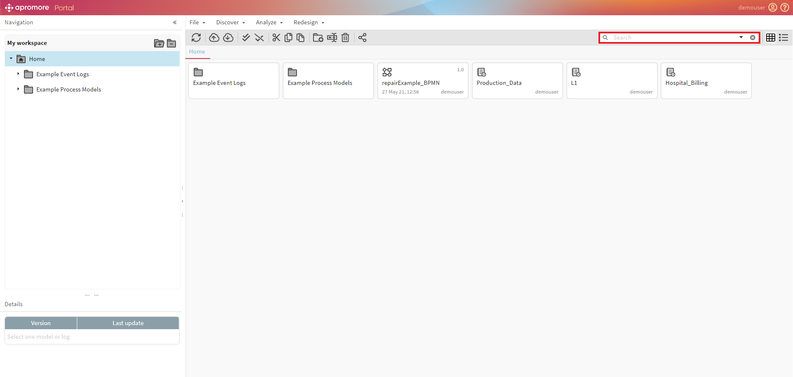

Navigating the Apromore Portal¶
The Apromore Portal is the first and primary interface that users access. One can navigate the workspace folders and perform various actions through the available plugins. This introduction covers the basics of the Apromore Portal.
Please refer to the various entries in the user guide for specific plugins information and capability.
To view the Apromore portal, log in using valid credentials.

The Apromore Portal appears after successfully logging in. The workspace folder structure/folders tree is on the left-hand side of the portal window in the My workspace area. We can expand/collapse individual folders by using the arrow icon next to each folder. We can also expand/collapse all folders at once using the two icons located on the top-right of the folders tree.

The central area of the portal contains the file view. The file view shows folders, process models (represented by a flowchart icon), and event logs (represented by a logbook icon). We can view the files either in grid or list format.
We can see the details such as version, last update time, and owner of a process model in the Details view.

Note
The Details view is populated only when a process model is selected
We can double-click on a process model to edit it using the BPMN 2.0 standard in the Apromore Editor. Likewise, we can also double-click on an event log to reverse-engineer the process map or BPMN model from the selected log in the Process Discoverer.
File Menu¶
The File menu is used to manipulate files, such as uploading or downloading models and logs, creating a new folder or process model, renaming a file, and deleting it. The other menus (Discover, Analyze, Redesign) provide access to the various process mining and process model manipulation plugins.
We can access the user guide from the question mark button on the top-right corner of the Portal.

The File menu functionality is also easily accessible from the top buttons bar.
Share file/folder¶
To share an individual file/folder, select the file and click on the Share file or folder button.

Access Rights¶
To view a comprehensive list of all the files and folders along with the users and access rights, click on the Manage Access Rights button.
Note
Only a user with administrator rights can access the Access Rights Management functionality
Manage users and groups¶
To manage different users and groups, click on the Manage users and groups button.
Note
Only a user with administrator rights can access the Manage users and groups functionality
Rename File¶
To rename a file, select a file and click on File > Rename.
Enter a file name and click OK.
{kind=link}
Delete File/Folder¶
To delete a file/folder, select a file and click on File > Delete.
Note
If a process model has multiple versions, the model with the latest version is deleted
Cut/Copy/Paste files¶
To copy a log/model, select it and click on the Copy button.

Paste the log/model in the desired directory by clicking on the Paste button.
To move a log/model, select it and click on the Cut button and then paste the log/model to the desired directory.

Search File/Folder¶
We can search for specific folders or files by entering keywords in the textbox. The results appear in the file view.

User Menu¶
To check Apromore’s version number and the list of available plugins, change the password and sign-out, click on the user menu.
To report a bug or any other problem related to Apromore, select Report Issue from the user menu drop-down.

Note
If possible, please mention the steps you performed that led to the issue and also attach the related logs so that the Apromore team can quickly and effectively address the issue.